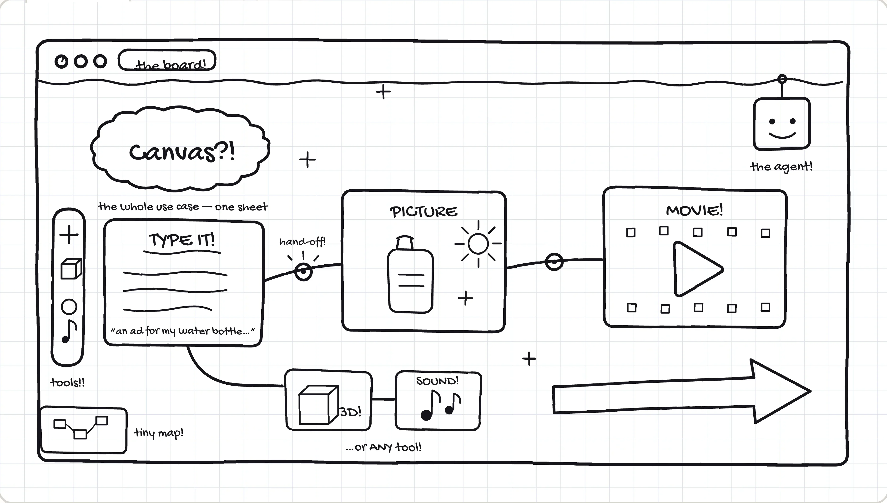
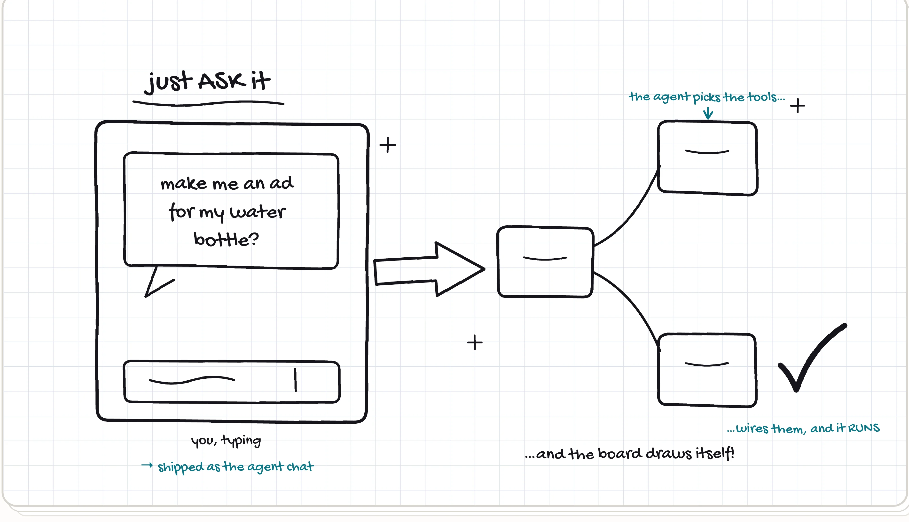
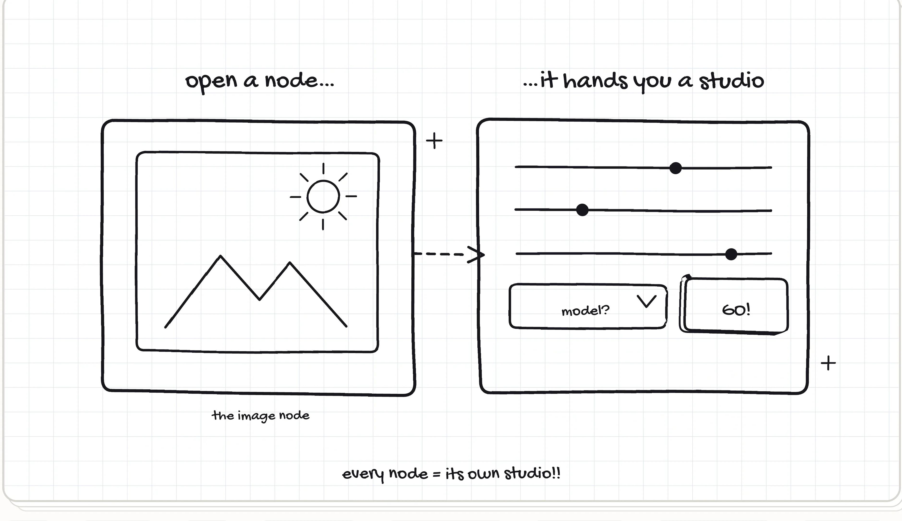
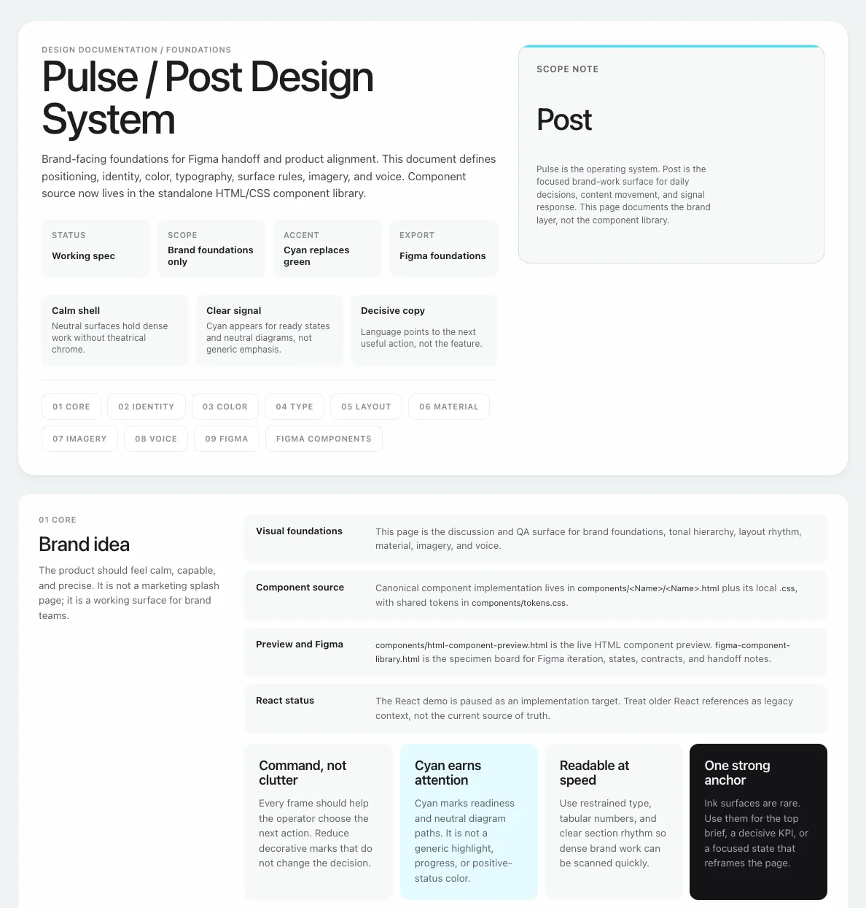
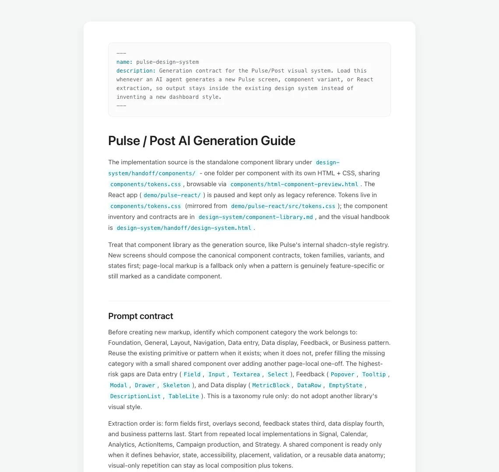
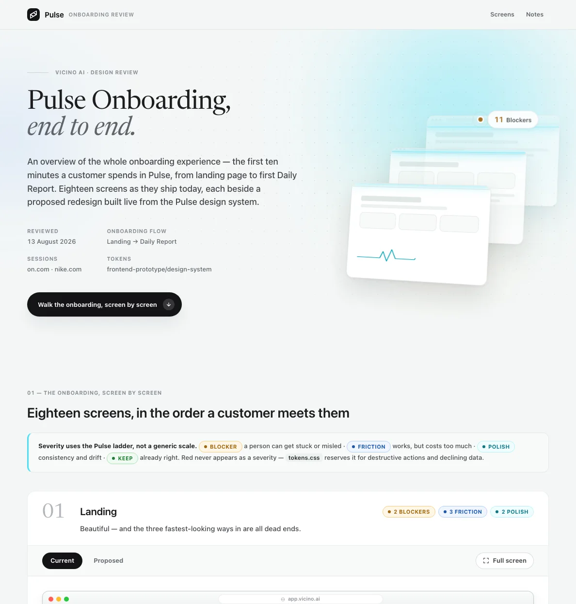

24 node types
on Canvas — image, video, 3D, audio, and every tool between
a canvas built from the ground up
Vicino AI turns a marketing brief into a workflow you can see: an infinite canvas where every node is a generation step — image, video, 3D. Describe what you want and an agent wires the graph — or place the nodes and wire it yourself.
I helped build Canvas from the ground up — and, with my colleagues, the design system behind Pulse, Vicino's marketing-analytics side, plus the guide that teaches AI to design inside it.
one canvas · one design system · one guide for the machines
try the working canvas
the real thing, in your hands
The shipped board, rebuilt at full fidelity — same chrome, same tokens, no backend. It runs itself while parked, like the arcade tiles on play; click it and the whole board opens in its own tab, fully yours.
a board where AI tools become nodes
Every tool is a node — image, video, 3D, audio — but the idea was mapped in a sketchbook first: three sheets, one per use case. The cyan ink is the epilogue — what each scribble became. Flip the tabs.



describe it, or wire it
Same board, two hands on it. Tell the agent what you want and watch the graph assemble — or place every node and pull every wire yourself. Most real work is both.
one card, read closely
Every node is the same small promise: inputs on the left, the work in the middle, an output on the right. Learn this card and you’ve read them all — it introduces itself, one part at a time.
Image, Video, 3D, Audio — one card, one job, stated in a word. A finished node earns its green check, so a glance across the board tells you what’s done and what’s still owed.
Purple is text, teal is image, apricot is video, blue is 3D. This card takes two inputs — a prompt and a reference picture — and you can read that from across the room.
Results land full-bleed in the card itself — no preview button, no popup. Drop media straight in, or let a wire deliver it from the node upstream; either way, the picture is the interface.
flux-2-pro sits on the face of the card, never buried in settings. Select the node and its studio opens — models, ratios, credits — but the choice that matters stays printed where you can question it.
Press play here, not in some global toolbar. Progress paints a quiet bar right under the work — exactly where you’re already looking — and the price of the run is quoted before you spend it.
Whatever this card makes becomes the next card’s input the moment a wire leaves this port. That’s the whole grammar of Canvas: small promises, chained until they’re a pipeline.
the design language behind Pulse
With my colleagues, I helped create the design system behind Pulse — Vicino's marketing-analytics side. 356 tokens in one truth-source file, and a brand book that ships as a website, because the best handoff is the real thing.
the palette, straight from tokens.css

how the language got chosen
Design systems are arguments settled with evidence: four candidate accents on identical dashboards — cyan won — and one whole screen pushed to the edge of too much cyan. Both are the real files.
62 components, one truth source
62 components, each a plain HTML/CSS pair behind the same 356 tokens, drift-checked in CI. Search the real library, deep-link a component, or open the Figma specimen board — every card below opens the real file in its own tab.
a design system machines can read
A design system starts to drift the moment a machine starts drawing. So we wrote the system down as a generation contract — a skill an AI agent loads before it touches a screen: reuse before inventing, one truth source, and a list of things it must never do.
I helped create the guide. The chips below are its forbidden list — turn them over. And the card on the right is the real file: click it to read the whole thing in its own tab.
--- name: pulse-design-system description: Generation contract for the Pulse/Post visual system. Load this whenever an AI agent generates a new Pulse screen, component variant, or React extraction, so output stays inside the existing design system instead of inventing a new dashboard style. ---
loaded by AI agents before they draw a single screen

text clips · colors do not explain state · card shadows form square artifacts · nested cards appear · the user cannot tell the next action
eighteen screens, redrawn on-system
The contract got its first big job: Pulse’s onboarding — eighteen screens, landing page to first Daily Report. I handed Claude Code the generation guide and the design system and let the machine do most of the drawing: every proposed screen built live from the real tokens, on-system by construction, at a fraction of the usual cost.
what the review filed, on the Pulse severity ladder
And the handoff is the real thing again: the review ships as a website — each screen as it ships today beside its proposed redesign, defect by defect. The card on the right is the live site.

what shipped
24 node types
on Canvas — image, video, 3D, audio, and every tool between
62 components
in the design system, each a plain HTML/CSS pair with its states
356 tokens
in one truth-source file — drift shows up in CI, loud and yellow
14 charts
one data-display family — mono-cyan and ink, honest by contract
18 screens
of onboarding redrawn on-system — the machine holding the guide
Build the thing first — Canvas taught us what the language needed.
Then build the language — tokens linked, never copied, turn drift into a design decision.
Then teach the machines — a system an AI can read is a system that holds.
Then hand them the pen — eighteen screens later, the system held.